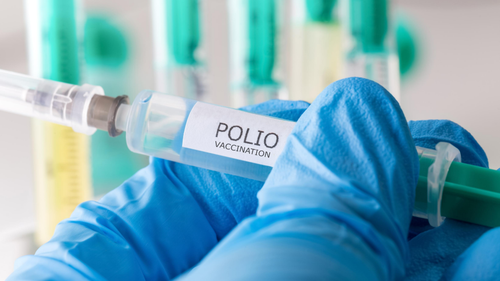

Em setembro foi aberto a vacinação contra Covid de crianças de seis meses a quatro anos, após a Agência Nacional de Vigilância Sanitária (ANVISA) autorizar o uso da Pfizer para vacinar em Londrina. Apesar de ter demorado para começar a vacinação para as crianças, agora é só fazer o cadastro pela internet, mas ainda não começou porque não chegou as doses em Londrina, a Secretaria Municipal de Saúde está analisando se vai ter que definir Unidades Básicas de Saúde para essa faixa etária, segundo o vacinometro foram administradas mais de 1.3 milhões de doses. Em média de 500 mil pessoas receberam a primeira dose, 464 mil tomaram a segunda dose, como já está disponível o cadastro é só aguardar para começar a vacinação.
Vírus que pode causar paralisia, facilmente evitável por vacinação contra a poliomielite, mas está liberado a vacinação, mas teve pouca procura. Esquema vacinal contra a poliomielite consiste na aplicação de três doses da vacina injetável e outras duas doses da vacina até os 4 anos de idade, no Brasil só 60% dos menores de 5 anos estão vacinados contra a poliomielite. Ao todo, 14,3 milhões de crianças devem receber as doses. Vacina oral poliomielite é administrada nos primeiros anos de vida e que também é importante que as crianças a partir dos 2 meses até os 5 anos de vida recebam doses anuais dessa vacina Apesar de ser uma doença que pode se espalhar rapidamente entre comunidades com cobertura vacinal insuficiente, não é uma doença que é tratada, mas ela pode ser evitada através de vacinas. A doença pode causar paralisia permanente e irreversível. Então é necessário vacinar as crianças um ato simples que evita de acontecer o pior.